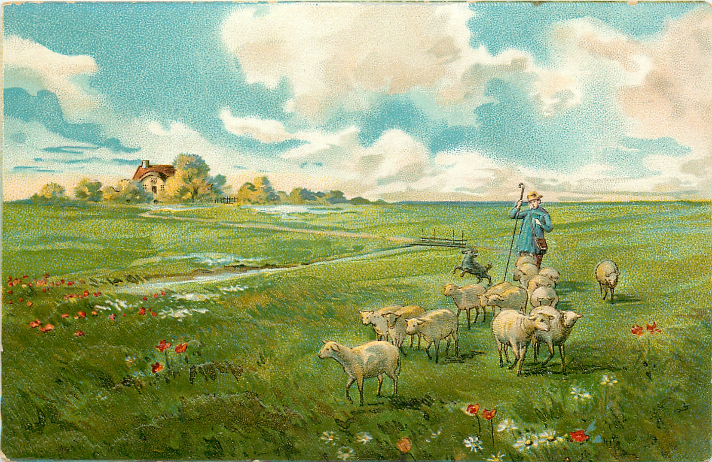
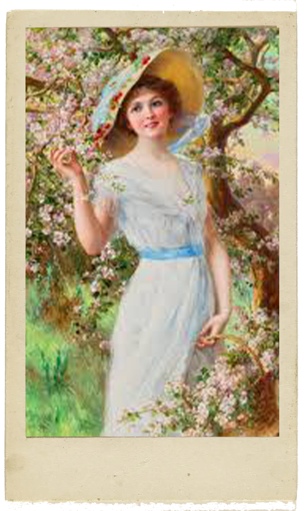

Under the heat of the burning summer sun, languishes man,
languishes the flock and the pine is parched.
We hear the cuckoo's voice;
then sweet songs of the turtledove and goldfinch are heard.
The zephyrs stir the air, but the threatening
North Wind sweeps them suddenly aside.
The shepherd trembles,
fearing violent storms and his fate.

Adagio e piano – Presto e forte
The fear of lightning and fierce thunder
Robs the poor sheperd's tired limbs of rest
As swarms of gnats, wasps, hornets and flies buzz furiously around.

Presto
Alas, his fears were justified
The Heavens thunder and roar and with hail
Cut the head off the wheat and damages the grain.